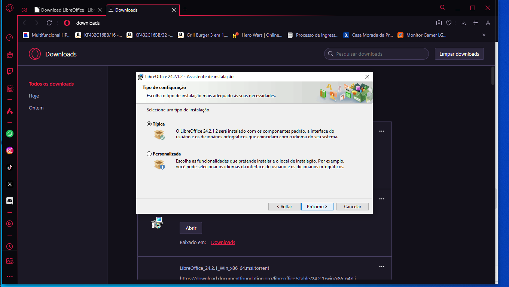

Vantagens e Desvantagens entre LibreOffice e Office :
| Vantagens | Desvantagens |
|---|---|
| O LibreOffice tem uma ferramenta de desenho, chamada LibreOffice Draw, que não tem concorrentes na suíte Microsoft; | O Office conta com três programas que não tem versões gratuitas integrando a suíte LibreOffice: OneNote, para notas, Outlook, para gerenciamento de e-mails, e Publisher para layout de páginas; |
| O LibreOffice é gratuito para download; | O LibreOffice possui detalhes arredondados e é menos amigável. |
| O LibreOffice pede apenas 256 MB de RAM, 1,5 GB de espaço em disco disponível e o mesmo monitor da concorrência. É menos exigente. |
Formulario sobre a ferramenta : Clique aqui para sabe mais !